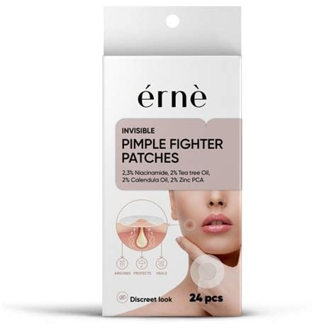
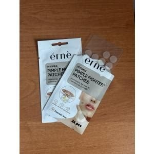
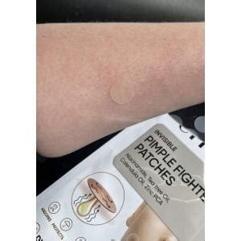

<div> <table style="border-collapse: collapse; width: 99.9809%;" border="1"><colgroup><col style="width: 49.9522%;"><col style="width: 49.9522%;"></colgroup> <tbody> <tr> <td> <div><span style="font-size: 14pt;"><strong>Erne Plasturi invizibili pentru cosuri, 24buc.</strong></span></div> <div><span style="font-size: 14pt;">Plasturii hidrocoloidali Erne+ reprezintă o soluție rapidă și extrem de eficientă pentru eliminarea coșurilor direct de la sursă. Aceștia izolează imperfecțiunea de bacterii și factorii externi, grăbind procesul natural de vindecare a pielii și absorbind secrețiile fără să usuce sau să irite zona din jur.</span></div> </td> <td></td> </tr> <tr> <td></td> <td><span style="font-size: 14pt;">Designul minimalist și structura ultra-subțire fac ca acești plasturi Erne să fie aproape invizibili după aplicarea pe ten. Marginile fine garantează o aderență excelentă pe parcursul &icirc;ntregii zile sau nopți, permiț&acirc;nd chiar și aplicarea machiajului deasupra, pentru o camuflarea ideală și discretă a imperfecțiunilor.</span></td> </tr> <tr> <td><span style="font-size: 14pt;">Ambalajul compact Erne conține plasturi care se adapteaza perfect oricărui tip de coș sau inflamație. Realizați din material hidrocoloid calitativ, aceștia calmează roșeața și previn formarea cicatricilor post-acneice, devenind aliatul ideal &icirc;n trusa ta zilnică pentru un ten curat și uniform.</span></td> <td></td> </tr> </tbody> </table> </div>